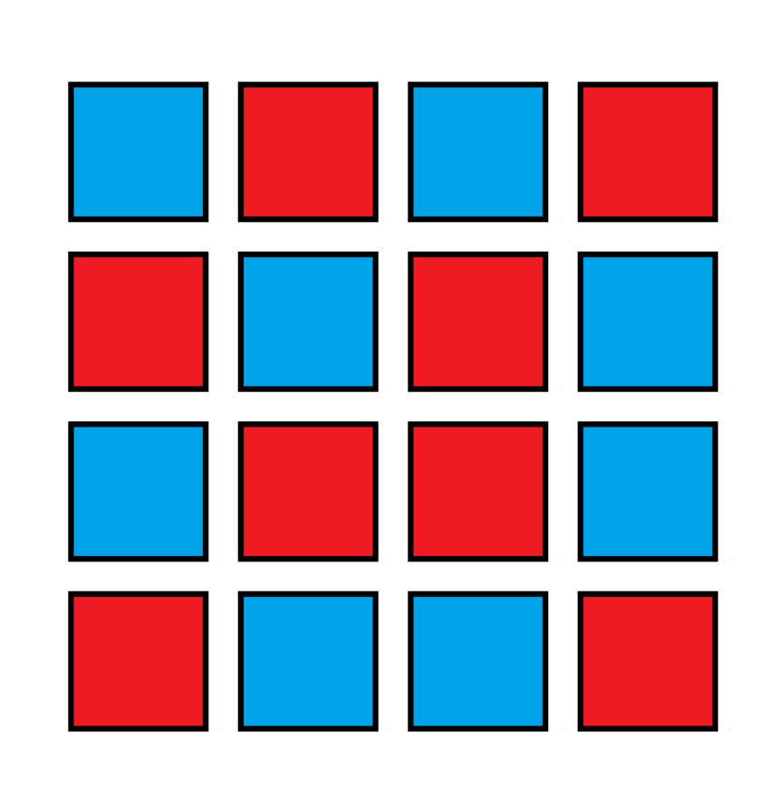

About me
I am Vivien Chambe, I hold a degree in Maths and Computer Science and I'm passionate about software
development and programming. I have acquired a solid experience in the development of appplication and
I have worked on various projects that have equally passionate me. My goal is to pursue a Master’s in
Computer Science and turn to cybersecurity or medical software development. During my license
training I was able to discover and take in hand languages like Python, C, Assembler or C++
and acquire knowledge in CAD, how processes work.However my learning was also self-taught
by discovering for example web development with HTML, CSS and JavaScript but also cross-plateform
software development with the Flutter framework.
Portfolio
Product Configurator

During my internship at HPinc I was able to create a configurator for a third company
to allow customers to have a
idea of the price of their product purchased from HP. This configurator has to be available offline and was intended to replace a
Excel file. So I decided to make a mobile application in Flutter that would allow to realize
this task. This application allows you to choose the different components of the product and calculate the price
It also allows you to save a configuration as a pdf. This application is available
for Android, iOS and Windows.
Cell Segmentation & Tracking

Python

The goal of this project is to implement a code that can, from microscopy images of Live Cell
Imaging, tracing the evolution of cells over time. We have images in 2D + T, that is
2D images taken over time, it would be necessary to find the correspondence of each
cell from one image to another and plot their trajectory. To learn more find the entire
project on Github
Scientific Game Jam : Chip Checker

C++
Unreal Engine
I participated in the Scientific Game Jam 2023 in Grenoble
during which I was able, with a team of 7 people, to realize in 48h a video game in order to
present and make discover the thesis of a research teacher, Olivier Occello. You can find the summary of
our work and try the game on Itchi.io.
PablOthello
C++

Projet réalisé en binôme lors de notre formation de programmation orientée objet. Le but était de programmer
un Othello, un jeu de plateau, en C++ en utilisant les notions de programmation orientée objet. Nous avons donc
réalisé un jeu en console avec un menu permettant de jouer contre un autre joueur ou contre une IA. Nous avons
ensuite réalisé une interface graphique avec la librairie WxWidgets. Vous pouvez retrouver le projet sur GitHub.
Mini Shell
C

Pour le cours de Système de ma formation j'ai réalisé un mini shell afin de me familiariser avec les *
concepts de processus et de système d'exploitation. Ce mini shell permet de lancer des commandes simples
comme ls, cd, pwd, etc... Vous pouvez retrouver le projet sur GitHub.
Nuit de l'info 2022

HTML
CSS
JS
Dans le cadre de la nuit de l'info 2022 nous avons dû réaliser en équipe un site internet afin de
faire de la prévention et de l'information sur le thème de la santé sexuelle. Pour cela nous avons eu
environ 12h (de 18h à 6h) pour réaliser ce site. Nous avons donc décidé de réaliser un site en HTML/CSS/JS et
de ne pas utiliser de framework afin de pouvoir réaliser les objectifs d'éco conception visant à réduire
l'impact environnemental du site. Nous avons donc réalisé un site simple et épuré avec un design minimaliste
que vous pouvez retrouver ici.
Application "Les Copaings"
Java
Flutter
Dart
Cette application regroupe plusieurs petits jeux de soirées allant du Picolo au Je n'ai jamais en passant par
l'Undercover. Originellement développée en Java, j'ai décidé de la refaire en Flutter pour pouvoir la
rendre cross-plateforme et ainsi la rendre disponible sur iOS et Android sans avoir à tout reprogrammer.
Projet de Logique : Binairo

Python
Projet réalisé pour le cours de Logique de ma deuxième année de License Maths et Informatique. Le but était
de créer un jeu de Takuzu/Binairo dont le but est de remplir la grille avec des 0 et des 1 en respectant les règles suivantes :
- Il ne peut pas y avoir plus de deux 0 ou deux 1 côte à côte
- Il doit y avoir le même nombre de 0 et de 1 sur chaque ligne/colonne
- Il ne doit pas y avoir 2 lignes ou colonnes identiques
Une fois l'interface graphique créée nous avons pu transformer une grille de Takuzu en formule logique et
utiliser un solveur SAT pour résoudre la grille. Dans notre cas nous avons utilisé Picosat.
Vous pouvez retrouver le projet sur GitHub.
Pour en voir plus (Scrappers, TPs, plus petits projets, etc...) voir GitHub

Pour en savoir plus sur mes expériences professionnelles voir LinkedIn